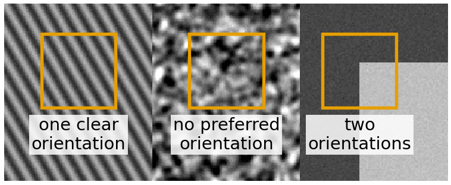
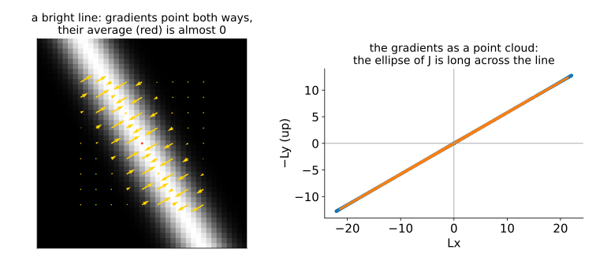
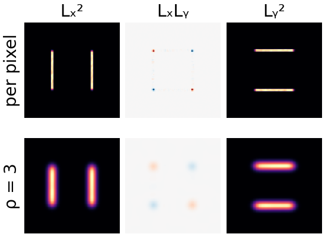
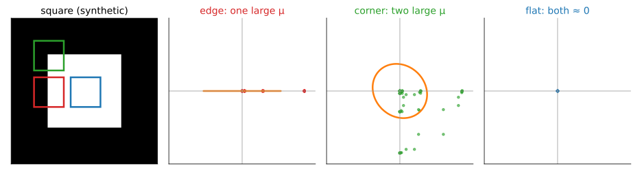
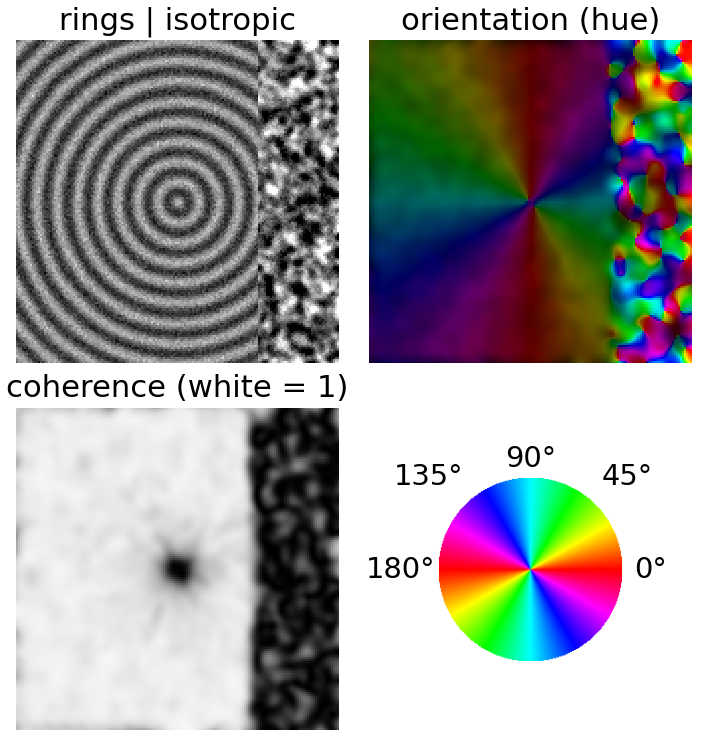
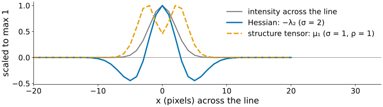
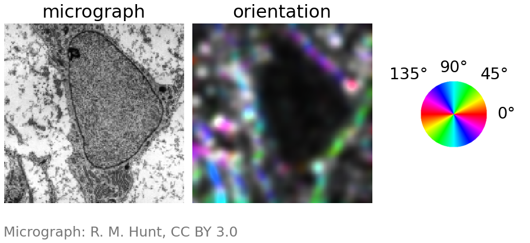

The structure tensor: orientation, coherence and corners
About this lecture
Fibres, wood grain, fingerprints, muscle, collagen: what is the dominant orientation in a small window, and how sure are we? And where are the corners?
- Averaging gradients fails; averaging \nabla L\,\nabla L^\top works.
- The structure tensor J: a 2 × 2 matrix per pixel, with two scales σ and ρ.
- J is the covariance matrix of the gradients in the window (recall PCA).
- Its eigenvalues give orientation, coherence, and edge / corner / flat.
- Corners (Harris) as interest points.
Slides titled The math give the formulas and proofs; the ideas are complete without them.
The question: orientation in a window
- At one pixel the gradient points across the local edge. But in a textured region, we want one orientation for a whole window, and a measure of how well defined it is.
- Uses: fibre orientation maps (collagen, muscle, cytoskeleton), fingerprint ridge flow, wood grain, flow-like textures; also “is there an edge, a corner, or nothing here?”
- First idea: average the gradient vectors in the window.

First try: average the gradients. It fails.

- On a bright line the gradients on the two sides point in opposite directions (towards the line from both sides) and cancel: the average is ≈ 0, although the orientation is perfectly clear.
- Same on stripes: every bright stripe has two sides.
- Fix: average something that does not care about the sign. The outer product \nabla L\,\nabla L^\top is the same for \mathbf g and -\mathbf g: a direction counted as an axis, not an arrow.
The structure tensor
J = G_\rho * \begin{pmatrix} L_x^2 & L_xL_y \\ L_xL_y & L_y^2 \end{pmatrix}
- Two scales: the gradient is taken at scale σ (against noise, as in Canny); the products are averaged with a Gaussian window of width ρ (how large a region we summarise).
- Every entry is an average of products of gradients: symmetric, 2 × 2, at every pixel.
- It is the covariance matrix of the gradient vectors in the window (without subtracting the mean, which is the point): plot the window’s gradients as a point cloud, and J is its ellipse. The same picture as in the PCA unit.

Reading J: three kinds of clouds

- Edge (or oriented texture): gradients all along one axis: a long thin cloud, one large eigenvalue \mu_1, \mu_2 \approx 0.
- Corner: gradients in two directions in the same window: a round, large cloud, two large eigenvalues.
- Flat: tiny cloud, both eigenvalues ≈ 0.
Orientation and coherence
With eigenvalues \mu_1 \ge \mu_2 \ge 0:
- The eigenvector of \mu_1 is the dominant gradient direction, across the stripes. The structure’s orientation is perpendicular to it.
- Coherence \Big(\dfrac{\mu_1 - \mu_2}{\mu_1 + \mu_2}\Big)^2: 1 = perfectly oriented, 0 = no preferred direction (isotropic texture, or a corner).
- Energy \mu_1 + \mu_2: how much is going on at all.
- Display: hue = orientation, saturation = coherence, brightness = energy.
Example: J = \begin{pmatrix} 5 & 2 \\ 2 & 2\end{pmatrix}: \mu = 3.5 \pm 2.5, i.e. 6 and 1; coherence (5/7)^2 = 0.51.

The math: why the outer product works
The squared slope in a direction \mathbf u (unit vector) is
(\nabla L\cdot\mathbf u)^2 = \mathbf u^\top\nabla L\,\nabla L^\top\mathbf u, \qquad\text{averaged over the window: } E(\mathbf u) = \mathbf u^\top J\,\mathbf u.
- E(\mathbf u) is the energy of change in direction \mathbf u. Maximise over unit \mathbf u: J\mathbf u = \mu\mathbf u (Rayleigh quotient, the same algebra as PCA’s largest variance direction). The maximum \mu_1 is along the first eigenvector, the minimum \mu_2 along the second.
- (\nabla L\cdot\mathbf u)^2 is the same for \nabla L and -\nabla L: opposite gradients add instead of cancelling.
- Without the window (ρ = 0), J = \nabla L\,\nabla L^\top has rank 1: \mu_2 = 0 at every pixel. Every pixel is an “edge”; only the window can see two directions at once.
The math: the doubled angle
Write the gradient as \nabla L = r(\cos\phi, \sin\phi). Then
J_{xx} - J_{yy} = \langle r^2(\cos^2\phi - \sin^2\phi)\rangle = \langle r^2\cos2\phi\rangle, \qquad 2J_{xy} = \langle r^2\,2\sin\phi\cos\phi\rangle = \langle r^2\sin2\phi\rangle.
- So J averages the vectors r^2(\cos2\phi, \sin2\phi): the doubled angle. Opposite gradients (\phi and \phi + 180°) have the same doubled angle and add up.
- The dominant gradient direction: \theta = \tfrac12\operatorname{atan2}(2J_{xy},\, J_{xx} - J_{yy}) (image coordinates, y down); the orientation of the structure is \theta + 90°.
- Coherence: \dfrac{\mu_1 - \mu_2}{\mu_1 + \mu_2} = \dfrac{\sqrt{(J_{xx} - J_{yy})^2 + 4J_{xy}^2}}{J_{xx} + J_{yy}}, the length of the averaged doubled-angle vector relative to the average r^2.
Try it: the structure tensor
Edge, corner, flat: Harris and Förstner
| \mu_1 | \mu_2 | ||
|---|---|---|---|
| flat | small | small | |
| edge / oriented | large | small | |
| corner | large | large | gradients in two directions in one window |
- Harris corner response: R = \det J - k\,(\operatorname{tr} J)^2 = \mu_1\mu_2 - k(\mu_1 + \mu_2)^2, k \approx 0.04 to 0.06: positive at corners, negative at edges, ≈ 0 in flat regions. No eigenvalues needed.
- Förstner / Shi–Tomasi: the smaller eigenvalue \mu_2 itself.
- Corners are local maxima of R above a threshold.
- Example (k = 0.05): edge J = \mathrm{diag}(10, 0.1): R = 1 - 0.05 \cdot 10.1^2 = -4.1; corner \mathrm{diag}(10, 8): R = 80 - 16.2 = 63.8; flat \mathrm{diag}(0.1, 0.1): R = 0.008.
The math: Harris from shifting a window
How much does a window change when shifted by a small \mathbf h?
E(\mathbf h) = \sum_{\mathbf x} w(\mathbf x)\,\big(I(\mathbf x + \mathbf h) - I(\mathbf x)\big)^2 \approx \sum_{\mathbf x} w(\mathbf x)\,(\nabla I^\top\mathbf h)^2 = \mathbf h^\top J\,\mathbf h \quad(\text{first-order Taylor}).
- Flat: E \approx 0 for every shift. Edge: E large across the edge, ≈ 0 along it (\mu_2 \approx 0). Corner: E large for every direction of \mathbf h, i.e. \mu_2 large.
- \det J = \mu_1\mu_2 and \operatorname{tr}J = \mu_1 + \mu_2, so Harris’s R is large only if both eigenvalues are, without computing them.
- This is why corners are good interest points: a corner’s window cannot be shifted in any direction without changing, so it can be found again, uniquely, in a shifted image.
Interest points
- A corner can be found again in a shifted or rotated image: that is what tracking and feature-based registration match.
- Modern keypoint detectors and descriptors (SIFT, ORB and others) combine a detector (corners, or DoG blobs from the scale-space unit) with a description of the window around each point, so that points can be matched between images.
- Pointer: the motion elective (registration, tracking) builds on this.

Right: 16 of the 22 corners are found again, within 2 pixels, after rotating the image by 25°.
Hessian vs structure tensor
| Hessian (last unit) | Structure tensor | |
|---|---|---|
| built from | second derivatives | products of first derivatives |
| sign | signed: bright vs dark | unsigned: \mu \ge 0 |
| finds | centres of blobs and lines | orientation, edges and corners |
| scales | σ | σ (gradient) and ρ (window) |
| at a line’s centre | strong (\lambda_2 \ll 0) | weak (the gradient is 0 there) |

Both are symmetric 2 × 2 matrices per pixel, both drawn as ellipses, both read through their eigenvalues.
Try it: textures and corners
Uses
- Orientation maps of fibres: collagen in tissue, actin, muscle; fingerprint analysis.
- Coherence-enhancing diffusion and other anisotropic filters: smooth along the orientation, not across it (pointer).
- Corners for registration and tracking.
- A feature channel for pixel classifiers: the eigenvalues of J (and of the Hessian) at several scales are standard features on the random-forest day.

σ = 1.5, ρ = 4: oriented membranes in colour, the isotropic texture of the nucleus grey or dark.
Summary
- Averaging gradients cancels on lines and stripes; averaging \nabla L\,\nabla L^\top does not.
- Structure tensor J = G_\rho * (\nabla L\,\nabla L^\top): gradient at scale σ, window ρ; the covariance matrix of the window’s gradients.
- Eigenvector of \mu_1: dominant gradient direction (orientation = perpendicular); coherence ((\mu_1 - \mu_2)/(\mu_1 + \mu_2))^2.
- Flat: both small; edge: one large; corner: both large. Harris \det J - k(\operatorname{tr}J)^2, or \mu_2.
- Corners are interest points: a window that changes under every shift.